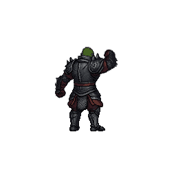
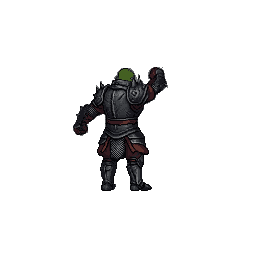
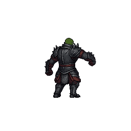

01-hoist
Right elbow is flexed above the shoulder, the forearm folds back over the occipital skull and the empty fist clears the crown. Left arm remains low as a counterweight. Pelvis is loaded between planted boots.
VISUAL_REVIEW_REQUIRED • global ARTISTIC_REVISION_REQUIRED • PENDING_CREATOR. Three separated keys only. No propagation.
Gold: anatomical right chain/support; cyan: left chain/pelvis. Approximate observed centers ±2px, not proof of quality.
Right elbow is flexed above the shoulder, the forearm folds back over the occipital skull and the empty fist clears the crown. Left arm remains low as a counterweight. Pelvis is loaded between planted boots.
Right humerus rises beside the head; elbow-to-wrist returns inward over the crown rather than extending sideways. Closed fist is fully enclosed by its contour. Left elbow and fist open away from the hoist pose; knees remain flexed.
Dorsal plate tilts forward, occipital skull follows the shoulder girdle down and forward, right shoulder falls into the blow. Elbow and fist descend beside/in front of the torso instead of sweeping sideways at head height. Pelvis sinks, knees bend and feet widen; left fist drops as counterbalance.



This steps through three holds, not a complete animation. Inspect the missing descent/recovery only after QA authorizes expansion.